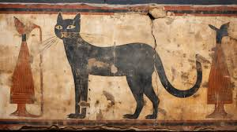
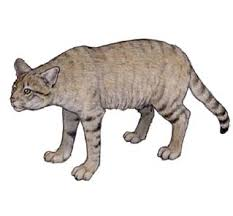
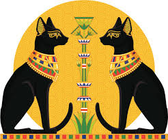
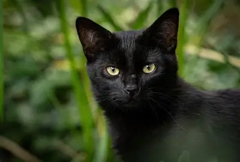
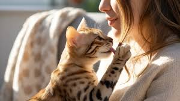

ね
こ
と
の
く
ら
し
へ
よ
う
こ
そ
！
このサイトでは、猫の歴史や基礎知識を中心に、
猫との暮らしについて楽しく学ぶことができます。
さまざまな猫の種類や性格を知りながら、
クイズを通して理解を深めていきましょう。
猫の歴史
人とともに生きてきた、約1万年の歩み

猫は、人間が農耕を始めたころから、自然と人の生活圏に入り込みました。 ねずみを捕る存在として役立つ一方で、そのしなやかな動きや神秘的な姿は、 人々の心を強く惹きつけてきました。
猫の歴史は、「役に立つ動物」から「信仰の対象」、 そして「家族の一員」へと変化してきた歴史でもあります。
-
約1万年前

猫の祖先と人との出会い
現代の猫の祖先はリビアヤマネコとされています。 穀物を保存するようになった人間の集落にはねずみが増え、 それを狙って猫が集まるようになりました。
この時点では飼われていたわけではなく、 「お互いに利益がある関係」として共存が始まりました。
-
古代エジプト

神として崇拝された猫
古代エジプトでは、猫は女神バステトの化身とされ、 家庭や命を守る神聖な存在でした。
猫を傷つけることは重罪とされ、 猫の死を悼んでミイラにする文化もありました。
-
中世ヨーロッパ

誤解と迫害の時代
中世ヨーロッパでは、猫は不吉な存在や魔女の使いとして 誤解されることがありました。
その結果、猫が減少し、ねずみが増え、 感染症の拡大につながったとも言われています。
-
現代
家族としての猫
現代では、猫はペットとしてだけでなく、 心を癒す大切な家族の一員として迎えられています。
猫と人は、より深い信頼関係を築く存在へと変化しました。
🐾 猫の歴史まとめ
猫は、農耕が始まったころから 人の暮らしのそばで生きてきました。 ねずみを捕る動物として、 自然と人に大切にされるようになりました。
古代エジプトでは神としてあがめられ、 中世ヨーロッパでは誤解されるなど、 時代によって猫の立場は変わってきました。
現代では、猫は家族の一員として
人の心を癒やす存在です。
このように、猫は人と深い関係を築いてきました。

猫の基礎知識
📘基本的な知識を分かりやすく紹介します。 猫の基礎知識→
種類大図鑑
🐱写真と一緒に紹介します。 種類大図鑑 →
猫の気持ち
💗気持ちを読み取るヒントを紹介します。 猫の気持ち →
猫クイズ
❓楽しく猫について学べます。 猫クイズ →